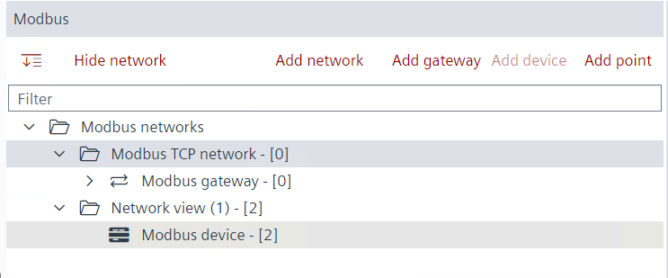
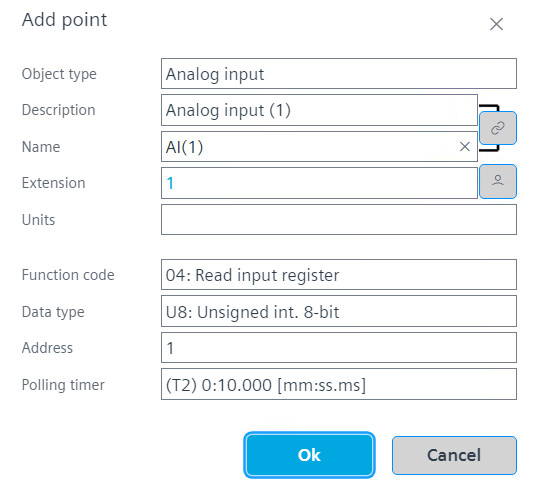

添加和配置 Modbus 数据点
- The Modbus device is configured.
- Go to Building > Building structure.
- Right-click the device and select Go to engineering.
- Open the Modbus task.
- In the Modbus area, select the device.

- On the Modbus device, right-click and select Add data point.
- The Add data point dialog box opens.
- Modify the data point properties.

Function code and data type definition - Click OK.
- Repeat the steps 5 to 7 for all required room operation unit data points.
- Create the control program in the device chart area.